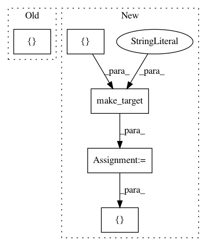

1dd8207434f24b6d10685188c52ef5840c4b34bb,tests/python/pants_test/backend/jvm/tasks/jvm_compile/rsc/test_rsc_compile.py,RscCompileTest,test_scala_lib_with_java_sources_not_passed_to_rsc,#RscCompileTest#,121
Before Change
dependencies=[jar_target]
)
context = self.context(target_roots=[jar_target])
context.products.get_data("compile_classpath", ClasspathProducts.init_func(self.pants_workdir))
context.products.get_data("runtime_classpath", ClasspathProducts.init_func(self.pants_workdir))
After Change
sources=["com/example/Foo.scala", "com/example/Bar.java"],
dependencies=[]
)
scala_target_indirect_java_sources = self.make_target(
"scala/classpath:scala_with_indirect_java_sources",
target_type=ScalaLibrary,
java_sources=["java/classpath:java_lib"],
sources=["com/example/Foo.scala"],
dependencies=[]
)
context = self.context(
target_roots=[scala_target_direct_java_sources, scala_target_indirect_java_sources])
context.products.get_data("compile_classpath", ClasspathProducts.init_func(self.pants_workdir))
context.products.get_data("runtime_classpath", ClasspathProducts.init_func(self.pants_workdir))
In pattern: SUPERPATTERN
Frequency: 3
Non-data size: 5
Instances
Project Name: pantsbuild/pants
Commit Name: 1dd8207434f24b6d10685188c52ef5840c4b34bb
Time: 2019-02-27
Author: nh@baroquebobcat.com
File Name: tests/python/pants_test/backend/jvm/tasks/jvm_compile/rsc/test_rsc_compile.py
Class Name: RscCompileTest
Method Name: test_scala_lib_with_java_sources_not_passed_to_rsc
Project Name: pantsbuild/pants
Commit Name: 052bdbb4e3afa98a7fe7ffb240587f19caada4ea
Time: 2018-03-01
Author: john.sirois@gmail.com
File Name: tests/python/pants_test/backend/python/tasks/test_pytest_run.py
Class Name: PytestTest
Method Name: test_coverage_auto_option_no_explicit_coverage_idiosyncratic_layout
Project Name: pantsbuild/pants
Commit Name: b31bef7003e087634af832cfd2486ca81209af63
Time: 2018-11-12
Author: jtrobec@twitter.com
File Name: tests/python/pants_test/backend/jvm/tasks/test_junit_run.py
Class Name: JUnitRunnerTest
Method Name: _coverage_engine